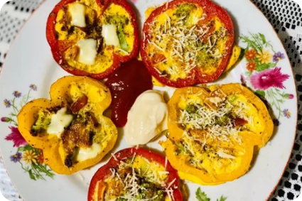

Omelet Paprika
Mudah 15 Menit
Bahan-bahan
- Paprika kuning dan merah di potong membentuk lingkaran bulat
- Brokoli
- Tomat ceri
- 1 butir telur
- 2-3 SDM susu
- Garam
- Lada hitam
- Peterseli
- Oregano
- Keju
Cara Membuat
- Siapkan bahan dan potong paprika dengan bentuk lingkaran.
- Campur telur, susu, garam, sayuran brokoli, dan paprika ke dalam wajan.
- Panaskan teflon dan oleskan dengan margarin.
- Lalu simpan paprika yang sudah diiris membentuk bulatan.
- Tuangkan campuran telur di dalamnya. Lalu taburkan lada hitam, oregano dan parsley di atasnya.
- Masak dengan api kecil agar telurnya matang merata dan paprika nya tetep segar.
- Setelah matang kasih taburan keju.
- Dapat dinikmati dengan saos atau mayonesse.
|